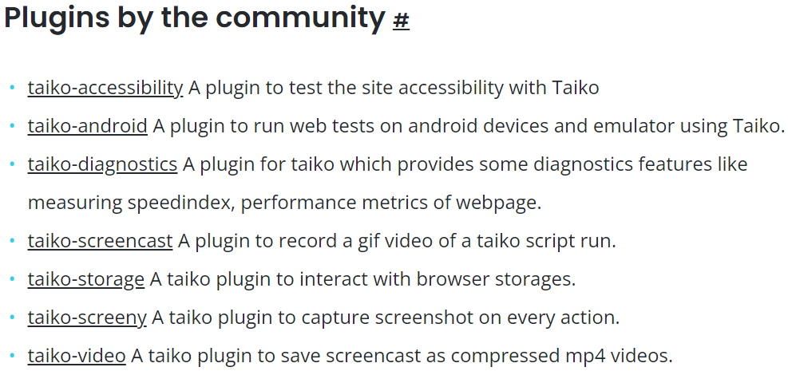

Reliable Browser Automation
Created by Thoughtworks and contributors
Presentation by Amit Sarkar
Thank you QA Babble
Thank you Team Taiko
Taiko is a node library with a clear and concise API to automate Chromium browsers.
AGENDA
- About me
- E2E tests
- Taiko
- Why Javascript?
- Test framework
- Comparison
- Limitations
- Demo
- Conclusion
- References
About me
- 13+ years in software testing
- Tested web, mobile, and desktop applications.
- Worked in large enterprises and start-ups.
Worked for
Novoda
Odgers Berndtson
Rail Delivery Group
Privax
Tata Consultancy Services
E2E Browser Tests

E2E Browser Tests
Challenges
- Takes long time to execute
- Not part of development lifecycle
- Flaky
- Tough to read or modify
E2E Browser Tests
Goal
Simulate what a real user scenario looks like from start to finish
INTRODUCTION
Taiko is a free and open source browser automation tool built by Thoughtworks.
Open source history

SOURCE - Thirstyhead.com by Scott Davis
Meaning / Origin

My First Experience

Featured In

Inspiration #1

Inspiration #2


A Node.js library

It is a node library with a clear and concise API to automate the chrome browser.
Uses DevTools API

It uses the Chrome DevTools Protocol API and is built ground up to test modern web applications.
Custom Plugins
Taiko’s plugin architecture allows you to extend it.
Example - Taiko on Android

Smart selectors

Write test scripts by looking at a web page without inspecting it’s source code.
Implicit waits

Scripts written in Taiko are free of explicit local or global waits and the flakiness.
Interactive recorder

Record and write maintainable test scripts within seconds using Taiko's unique recorder which is a REPL to automate the browser.
Request & response stubbing

Mock and stub XHR request from the browser with Taiko's intercept API.
Acronyms
- XHR stands for XML HTTP Request. It's used to update parts of a web page, without reloading the whole page.
- REPL stands for Read Eval Print Loop. It is an interactive programming environment that takes single user inputs, executes them, and returns the result to the user
Why Javascript?
Why Taiko supports only Javascript and not any other languages?
Browser Automation State

Benefits

Test Framework
What would a test framework with Taiko look like?
Programming Language


Test Runner


Library

Protocol
Browser


Platform

 macOS
macOS


Front-end JS Framework


Tool Comparison
How does Taiko compare with other browser automation tools?

Competition


Limitations
Are there any limitations to Taiko?
Languages not Supported


Browsers not Supported


Platforms not Supported
iOS
Demo
It's demo time :)
Sample Scripts

Conclusion
- It's a Node.JS library
- It uses Chrome DevTools Protocol
- It automates tests quickly by using smart selectors
- It reduces flakiness by handling waits
- It comes with an interactive REPL
- It's completely open-source
Reference
- Taiko (Main) - https://taiko.dev/
- Taiko (Github) - https://github.com/getgauge/taiko
- Taiko (Spectrum) - https://spectrum.chat/taiko
- Taiko (Documentation) - https://docs.taiko.dev/
- Taiko (Twitter) - https://twitter.com/taikodev
Use Github to post issues with Taiko and Spectrum to ask questions about Taiko to the team
This Presentation
Thank You
Email - amit.sarkar007@gmail.com
LinkedIn - linkedin.com/in/amitsarkar007
GitHub - github.com/amitsarkar007
Questions?
Please post your questions on sli.do
Event Code : # 20269